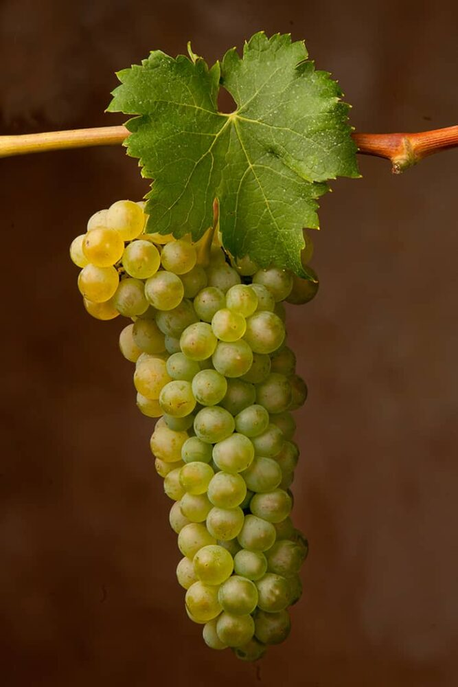
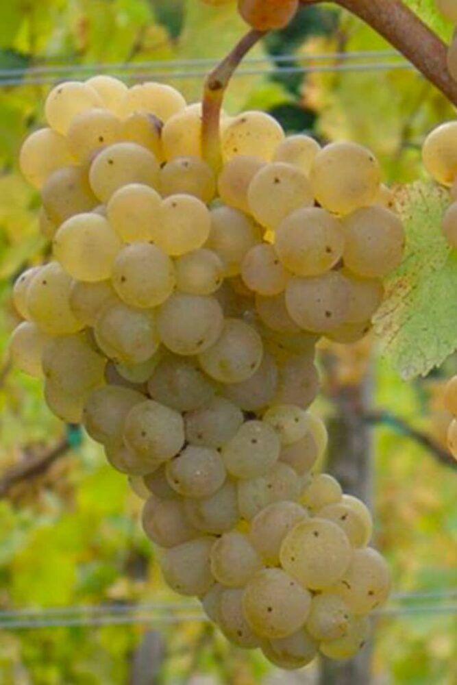
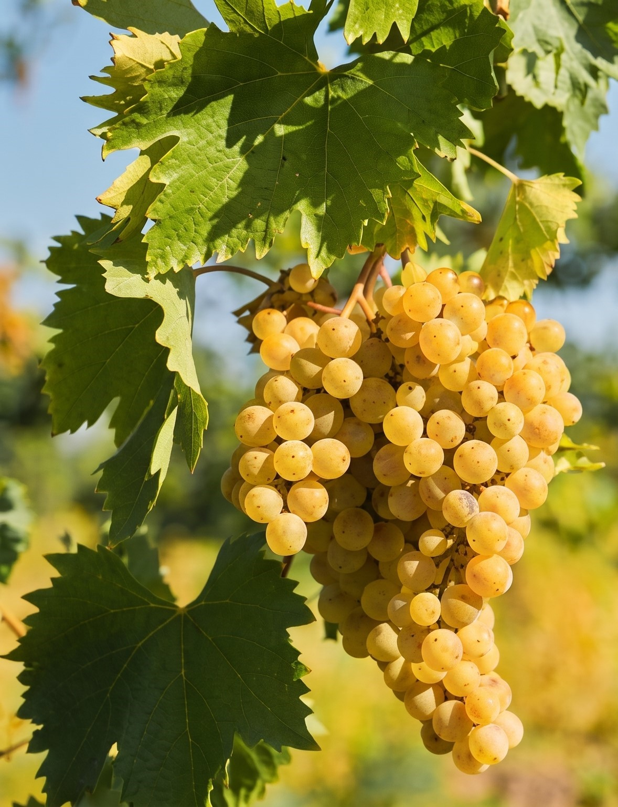
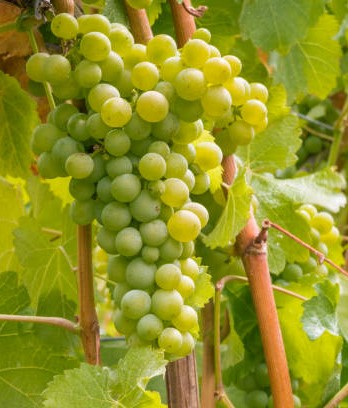

Espressione di freschezza, sapidità minerale e profumi autentici della ponca friulana.
Secco, morbido, vellutato, con acidità moderata
Fiori di campo e il caratteristico finale ammandorlato
Prosciutto di San Daniele, antipasti magri, formaggi freschi

Asciutto, fresco, vivace e spiccatamente acido
Fiori bianchi, mela verde, agrumi
Fritture di pesce, crostacei, aperitivi leggeri

Aromatico, sapido, asciutto e minerale
Albicocca, erbe aromatiche e note iodate
Zuppe di pesce, piatti speziati, risotti alle erbe

Elegante, fresco, con viva acidità e una decisa scia minerale donata dalla ponca
Foglia di pomodoro, bosso, peperone verde, fiori di sambuco e frutta esotica matura
Frittata con sclopit o asparagi, risotto agli asparagi, formaggi di capra e piatti vegetariani saporiti
